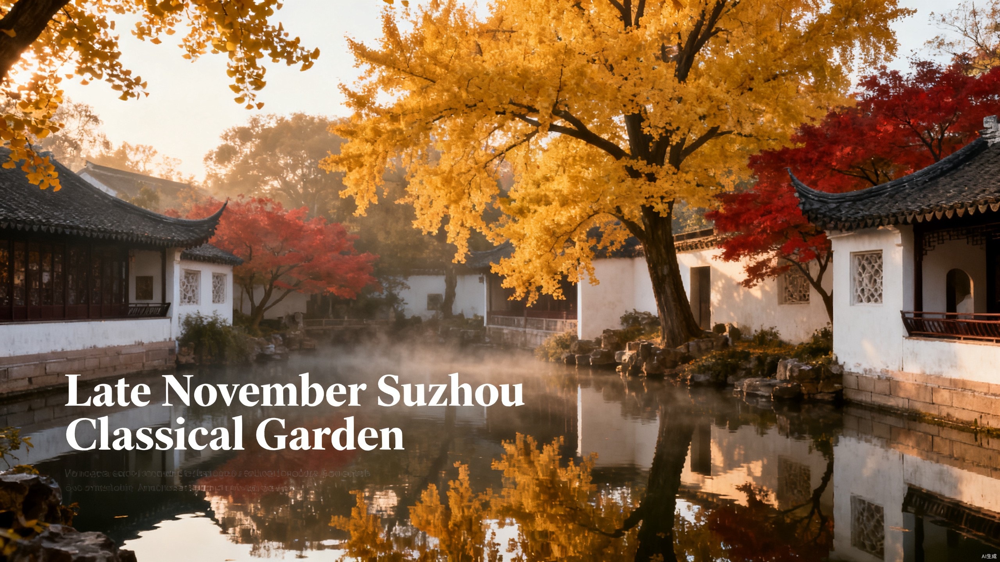
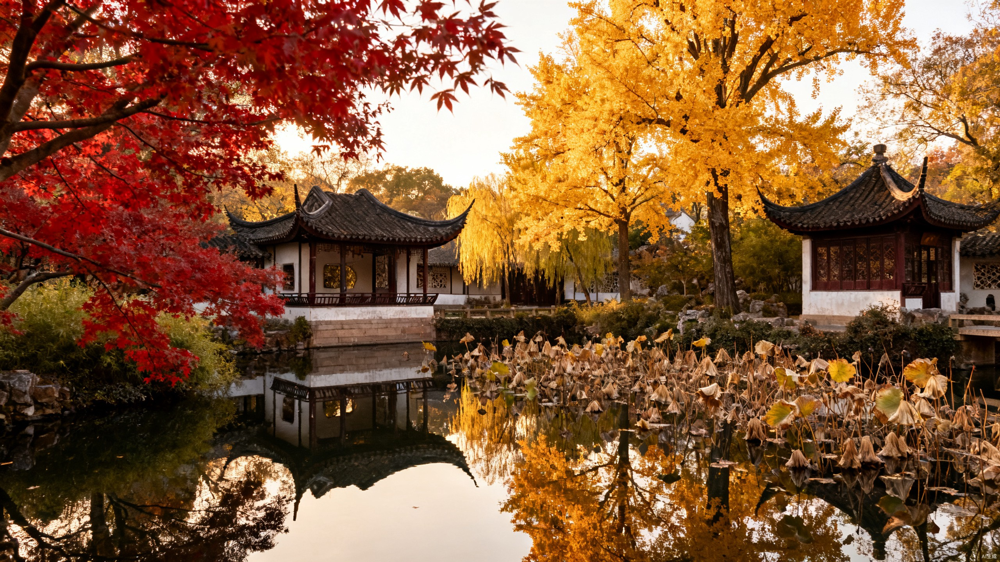
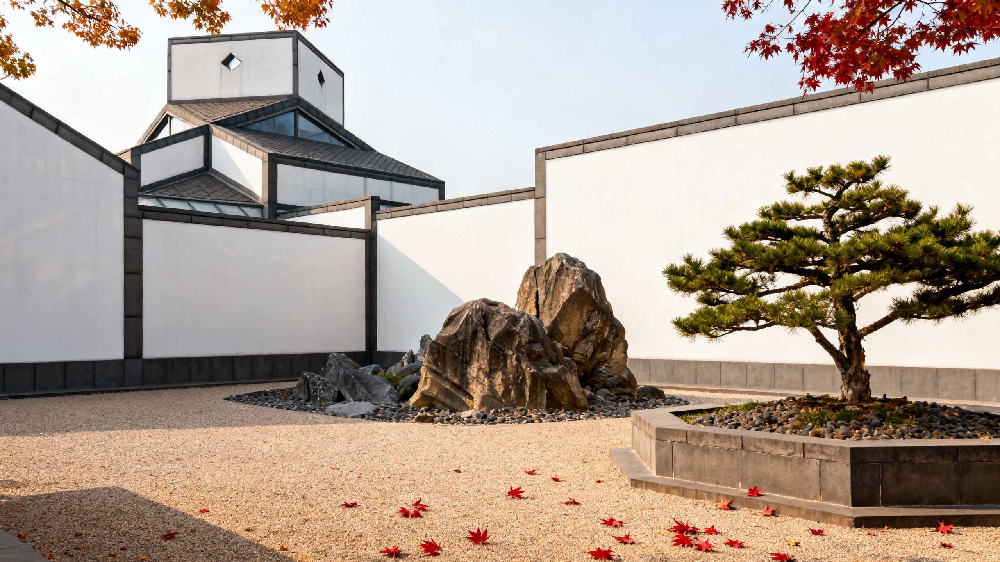
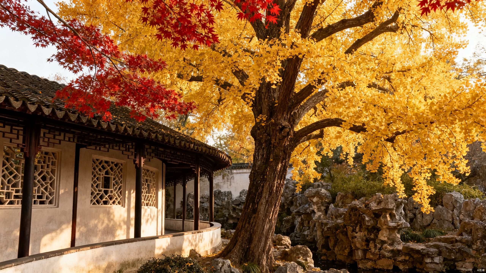
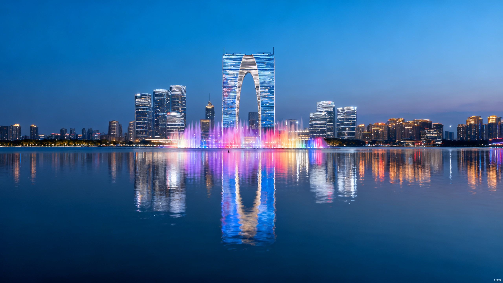
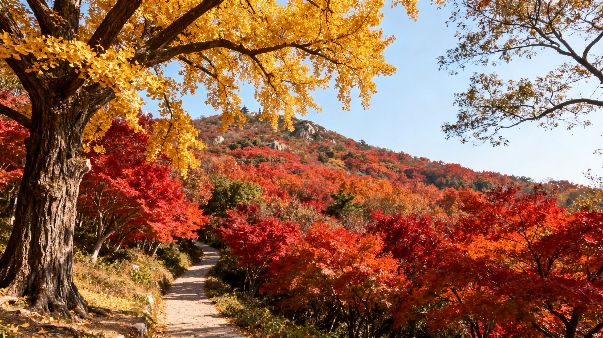

Day 01
古城园林线
拙政园 → 苏州博物馆 → 平江路 → 山塘街。一天走完苏州最精华的园林与街巷。

SUZHOU · 3 DAYS · AUTUMN ROUTE
三天，刚好够把苏州的秋天读一遍。第一天逛古城园林与街巷，银杏落在水巷里；第二天登虎丘、逛留园、看金鸡湖的日落；第三天专程去天平山，看四百岁古枫香红透半座山。
01 / OVERVIEW
行程以古城为中心向外辐射：第一天全部在步行圈内，第二天西线登虎丘、逛留园再转东线湖景，第三天乘地铁 1 号线直达木渎站、专程去天平山看红枫。节奏是「上午看园、下午看水、傍晚看灯」，避开正午人流与高温。
拙政园 → 苏州博物馆 → 平江路 → 山塘街。一天走完苏州最精华的园林与街巷。
虎丘 → 留园 → 金鸡湖。从千年斜塔一路走到现代天际线。
天平山。上午看四百岁古枫香红透半座山，带着满眼秋色返程。
02 / BEFORE YOU GO
苏州的坑不多，但预约、闭馆和季节这三件事一定要提前确认，否则很容易白跑一趟。
3–5 月看玉兰、樱花与春景，9–11 月闻桂花、看银杏，是体感最舒服的两段。6 月中至 7 月上为梅雨，7–8 月高温，节假日园林人流翻倍。
苏州没有机场，从上海虹桥乘高铁约 30 分钟。苏州站离古城最近，苏州北站偏远。市内地铁 1 / 2 / 4 号线覆盖主要景点，扫码用「苏e行」；古城内点对点打车多为 10–20 元。
苏州博物馆本馆免费，但实行分时全预约，需提前 1–7 天在官方公众号或「苏州博物馆全预约」小程序预约，并按预约时段入馆（逾期可能无法入馆），周一闭馆（法定节假日除外）。拙政园、留园旺季建议提前购票，节假日当天现场常常已满。
首选观前街—平江路一带，步行 15 分钟到拙政园，晚上吃逛都方便。喜欢现代感和湖景，选金鸡湖 / 李公堤，适合第二天看完夜景直接回房。
园林多石板路与假山台阶，一双软底鞋比什么都重要。春秋早晚温差大，带一件薄外套；梅雨季备折叠伞，夏天备防晒与驱蚊。
门票合计约 ¥245，住宿 ¥400–800 / 晚，餐饮 ¥150–300 / 天。三天人均约 ¥2,000（经济型约 ¥1,450，舒适型约 ¥2,700），不含往返大交通。
LATE NOVEMBER · AUTUMN MAP
苏州的秋天比北方晚半个月。11 月下旬到 12 月初，银杏先黄、红枫后红，一场雨就可能落叶。下面四处是本地人也会专程去看的秋色，也都串进了这次行程——天平山、拙政园、留园与虎丘。
四百余年古枫香，「天平红枫甲天下」，11 月底最盛。
待霜亭红枫、见山楼银杏与残荷，园林秋景代表。
西部山林区与古银杏，人比拙政园少，适合慢拍。
山门内银杏大道、后山枫香与乌桕，抬头就是秋。
DAY ONE · OLD TOWN
从明代的拙政园走到宋代的平江路，白天看园，入夜看水。全天几乎不用坐车，靠一双脚就能串起来。
| 时间 | 安排 | 时长 | 关键提示 |
|---|---|---|---|
| 07:30–08:15 | 早饭 · 苏式面同得兴 / 裕兴记，枫镇大肉面或焖肉面 | 45 min | 早点去，面馆 9 点后排队明显变长 |
| 08:15–10:45 | 拙政园东园 → 中部水池 → 与谁同坐轩 → 卅六鸳鸯馆 | 2.5 h | 从东园进、中部出，逆着团队路线走更清静 |
| 10:50–12:10 | 苏州博物馆片石假山、秘色瓷莲花碗、真珠舍利宝幢 | 1.5 h | 约 10:00–11:00 场，须在时段内入馆 |
| 12:15–13:30 | 午餐 · 苏帮菜松鹤楼 / 得月楼，松鼠鳜鱼、响油鳝糊 | 1 h 15 | 两人点三菜足够，松鼠鳜鱼偏甜可先问口味 |
| 13:40–16:40 | 平江路主街 + 悬桥巷 / 大儒巷，评弹茶馆歇脚 | 3 h | 主街人多，拐进支巷才是老苏州；慢慢逛不赶 |
| 16:50–17:30 | 回酒店稍作休整放包、换双鞋，为夜景蓄力 | 40 min | 也可在观前街先逛一圈 |
| 17:40–18:50 | 晚餐 · 小吃观前街，哑巴生煎、桃花源记、海棠糕 | 1 h 10 | 生煎趁热吃，蟹壳黄可打包当夜宵 |
| 19:00–21:00 | 山塘街夜景通贵桥 → 新民桥，可选摇橹船夜游 | 2 h | 19:30 后灯笼全亮，桥上机位最好 |
| 21:30 | 回酒店古城内打车约 10–15 元 | — | 次日要早起，别在酒吧街耗太晚 |
※ 时间为参考节奏，园林内可根据人流前后浮动 15–30 分钟。

01 / 拙政园明正德年间御史王献臣归隐后所建，取「拙者之为政」之意。全园以水为中心，三分之一是水面，亭台楼榭皆依水而筑，是江南私家园林的集大成者。

02 / 苏州博物馆贝聿铭 85 岁时的「封山之作」，2006 年开馆。他用几何线条重新解释了粉墙黛瓦，片石假山以壁为纸、以石为绘，把米芾的山水立在了庭院里。
南宋《平江图》上的街巷肌理在这里延续了八百年，全长约 1.6 公里，河街并行、水陆相邻。主街是热闹的，但拐进悬桥巷、大儒巷，立刻安静下来。
唐白居易任苏州刺史时开凿山塘河并筑街，全长约 3600 米，号称「七里山塘」。白天是寻常水巷，入夜红灯笼次第亮起，才是它最好看的时候。
DAY TWO · HILLS & LAKE
上午登虎丘看千年斜塔，下午回古城看留园的空间魔术，傍晚去金鸡湖看另一面的苏州。
| 时间 | 安排 | 时长 | 关键提示 |
|---|---|---|---|
| 08:00–08:30 | 早饭酒店附近苏式面或粥铺 | 30 min | 今天步行多，吃扎实一点 |
| 08:30–11:00 | 虎丘云岩寺塔 → 剑池 → 千人石 → 真娘墓 | 2.5 h | 从南门进，先看塔再往下走，省体力 |
| 11:20–12:30 | 午餐虎丘山塘街外卖面馆，或回市区浇头面 | 1 h 10 | 景区周边选择少，可回市区再吃 |
| 13:00–15:00 | 留园冠云峰、五峰仙馆、曲廊漏窗，细看西部山林红枫 | 2 h | 重点看空间的「收—放—收」，别只拍石头 |
| 15:30–16:30 | 诚品书店 / 李公堤从古城转往金鸡湖畔，顺路逛一圈 | 1 h | 周末诚品人多，可先到湖边找位 |
| 16:40–17:30 | 金鸡湖日落湖滨大道，11 月底约 16:55 日落 | 50 min | 16:20 前到场占机位，蓝调更出片 |
| 17:40–18:50 | 晚餐李公堤 / 苏州中心，湖景餐厅 | 1 h 10 | 周末热门餐厅建议提前订位 |
| 19:00–21:00 | 金鸡湖夜景湖滨大道 → 东方之门 → 诚品书店 | 2 h | 湖边风大，11 月底带件薄外套 |
※ 虎丘到留园打车约 20 分钟；留园到金鸡湖李公堤约 25 分钟，建议直接打车。
苏轼说「到苏州不游虎丘，乃憾事也」。山顶的云岩寺塔建于五代后周显德六年（959 年），比比萨斜塔早两百多年，塔身千年倾斜而不倒，是苏州最著名的一眼。

06 / 留园留园最厉害的不是某一处景，而是空间的节奏：一条曲廊把庭院收得极窄，转过漏窗忽然豁然开朗。冠云峰是江南园林三大名石之一，瘦、皱、漏、透俱全。

07 / 金鸡湖看完两千年的园林，再来看看三十年的苏州。湖滨大道一路走到东方之门，对岸高楼连成一条光带，倒影落在湖面上，是古城之外最有反差感的一幕。
DAY THREE · AUTUMN HILLS
11 月底苏州最红的一天：上午去天平山看四百岁古枫香，中午尝一碗藏书羊肉，下午带着满眼秋色返程。
| 时间 | 安排 | 时长 | 关键提示 |
|---|---|---|---|
| 07:30–08:00 | 早饭 + 退房行李寄存在酒店，轻装上山 | 30 min | 山上台阶多，背包比箱子省力 |
| 08:00–08:50 | 地铁 1 号线苏州站 → 木渎站，转 4 路或打车 10 分钟 | 50 min | 木渎站出来打车约 15 元到景区 |
| 09:00–12:00 | 天平山山门古银杏 → 十景塘 → 白云泉 → 望枫台 | 3 h | 红枫节期间 8:00 开园，尽量早到避团 |
| 12:15–13:15 | 午餐 · 藏书羊肉山下木渎，羊汤 + 白切羊肉 | 1 h | 11 月底正是藏书羊肉上市的季节 |
| 13:30–14:40 | 返回市区木渎站 → 苏州站 | 1 h 10 | 预留取行李与进站时间 |
| 15:30 | 苏州站 / 苏州北站返程建议买 16:00 后的车次 | — | 11 月底 16:55 左右日落，别排太晚 |
※ 天平山红枫在 11 月底进入最盛期，周末人多，8:00 开园即进最从容。

08 / 天平山天平山以「红枫、奇石、清泉」三绝著称，山间四百余年的古枫香树在 11 月中下旬进入最盛期，从山门到白云泉一路红黄交织。乾隆六下江南曾到此，留下「天平红枫甲天下」的说法。
DETAIL · SPOT GUIDE
你计划去的八处，串起了「古典园林 → 水巷街市 → 山野秋色 → 现代湖景」四条主线。实拍参考来自新华社、中新图片、人民图片、视觉中国或官方渠道，点开即可对照自己出发时的预期。
以水为主，水面占全园约五分之三，亭台楼榭皆依水而筑；明正德年间王献臣归隐所建，500 余年。看点：远香堂、小飞虹、与谁同坐轩、卅六鸳鸯馆。
7:30 开园即进抢安静一小时；拍「与谁同坐轩」扇形窗框景；听讲解理解移步换景。
贝聿铭 85 岁的设计，用几何线条重新演绎粉墙黛瓦；片石假山「以壁为纸、以石为绘」；镇馆之宝秘色瓷莲花碗、真珠舍利宝幢。
中庭水池边拍片石假山倒影（上午顺光）；免费但须分时全预约，提前 1–7 天实名约。
南宋《平江图》上的街巷肌理延续 800 年，河街并行、水陆相邻；主街热闹，拐进悬桥巷、大儒巷立刻安静。
清晨 8 点前拍空镜；找评弹茶馆听一曲；穿汉服/新中式在石桥旧墙前拍照。
唐白居易开凿山塘河并筑街，全长约 3600 米；明清店铺、枕河人家，入夜两岸红灯笼逐次亮起。
傍晚来等蓝调亮灯；坐夜游船穿桥洞；通贵桥、新民桥拍灯笼倒影。
云岩寺塔建于 959 年（早比萨斜塔两百多年）、千年倾斜不倒；还有剑池、千人石、断梁殿，一山串一段吴国史。
8:30 前入园避团；塔下石阶仰拍，或用枫叶树枝前景框住斜塔。
最大看点是空间的「收—放—收」；冠云峰为江南名石、五峰仙馆楠木厅；廊壁嵌 379 方书法石刻。
慢逛体会移步换景；漏窗拍框景；冠云峰低机位拍倒影；人比拙政园少。
水域约 7.4 平方公里、十余公里环湖步道；地标东方之门+苏州中心，另有李公堤、诚品、月光码头、音乐喷泉。
16:20 前到湖滨大道等日落（11 月底约 16:55）→蓝调→亮灯；逛诚品；拍东方之门倒影。
「红枫、奇石、清泉」三绝；红枫 3000 余棵、400 岁以上古枫香 130 棵；与范仲淹家族渊源深厚。
11 月中–12 月初看红叶，走山门→十景塘→白云泉→望枫台；下山吃一碗藏书羊肉。
03 / CHECK-IN LIST
按「是否值得专程去」排序，而不是按名气。评分综合了景观独特性、人流体验与拍照出片率，可作为删减行程时的参考。
| # | 景点 | 评分 | 类型 | 建议时长 | 门票 | 一句话理由 |
|---|---|---|---|---|---|---|
| 01 | 拙政园姑苏区东北街 178 号 | ★★★★★ 4.9 | 园林世遗 | 2.5 h | ¥80 | 江南园林的天花板，第一次来苏州没有替代品 |
| 02 | 苏州博物馆姑苏区东北街 204 号 | ★★★★★ 4.9 | 建筑文物 | 1.5 h | 免费 | 建筑本身就是展品，片石假山值得单独留十分钟 |
| 03 | 平江路姑苏区平江路历史街区 | ★★★★☆ 4.7 | 街巷免费 | 2 h | 免费 | 最像「活着的苏州」，支巷比主街好看十倍 |
| 04 | 山塘街姑苏区山塘街 | ★★★★☆ 4.6 | 夜景水巷 | 2 h | 免费 | 灯笼一亮就是姑苏，夜里比白天值得 |
| 05 | 虎丘姑苏区虎丘山门内 8 号 | ★★★★☆ 4.6 | 古塔历史 | 2 h | ¥80 | 千年斜塔，一眼看懂苏州的年纪 |
| 06 | 留园姑苏区留园路 338 号 | ★★★★☆ 4.5 | 园林世遗 | 1.5 h | ¥55 | 看空间怎么「骗眼睛」，园林爱好者的必修课 |
| 07 | 金鸡湖工业园区湖滨大道 | ★★★★ 4.2 | 夜景免费 | 2 h | 免费 | 古城之外的另一面苏州，反差感很强 |
| 08 | 天平山吴中区木渎镇 | ★★★★★ 4.8 | 秋叶山景 | 2.5 h | ¥30 | 11 月底苏州最值得专程去的一片红 |
※ 评分为编辑综合主观体验，门票为参考价，以景区官方最新公告为准。
04 / BUDGET
按两人出行为例，经济型与舒适型各给一版。苏州的主要开销在住宿，门票反而是小头。
| 项目 | 经济型 | 舒适型 | 说明 |
|---|---|---|---|
| 住宿（2 晚） | ¥600 | ¥1,400 | 古城内快捷 / 精品民宿，含早更省心 |
| 门票 | ¥245 | ¥245 | 拙政园 80 + 虎丘 80 + 留园 55 + 天平山 30 |
| 餐饮（3 天） | ¥350 | ¥600 | 含一顿正经苏帮菜，其余面馆与小吃 |
| 市内交通 | ¥100 | ¥180 | 地铁 + 打车，木渎往返约 ¥15/人 |
| 其他（茶、船、伴手礼） | ¥150 | ¥300 | 评弹茶馆、摇橹船、碧螺春 |
| 合计 / 人 | ¥1,445 | ¥2,725 | 不含往返苏州的大交通 |
※ 价格为 2026 年参考区间，节假日住宿可能上浮 50%–100%。
05 / PRACTICAL TIPS
都是到了现场才会知道的小事，提前看一眼能省不少时间。